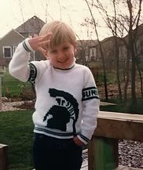
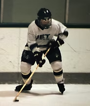
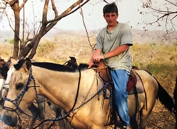
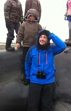

About me
I design training that people actually finish, and I've spent more than 15 years figuring out what makes that happen.
How I got here

Growing up in Northern Michigan offered an abundance of opportunities. As a kid, I was an avid sports enthusiast, enjoying baseball, soccer, track, mountain biking, and winter sports like skiing and snowboarding. Ice hockey in particular taught me the value of teamwork, dedication, and a strong work ethic, and even led to some incredible experiences like meeting some of my hockey heroes as a stick boy for the Detroit Red Wings training camp.

Beyond sports, I nurtured my curiosity through diverse hobbies. Writing became a passion from a young age. Participating in the Young Author's program, I connected with like-minded creatives and even inspired my classmates. Collaborative projects soon blossomed between teams of elementary writers and artists crafting stories and eventually engineering complex tabletop game scenarios.

As technology and the internet played a bigger role in everyday life, I ventured into the digital realm by creating video games and exploring information technology through my local Career-Tech Center. In college, my creativity and passion for writing led me to tutoring; witnessing students' growth ignited a sense of purpose that drove me to pursue a career in education.

Throughout my career, I have been fortunate to work in a wide range of settings, from the picturesque Midwest wine country to the beautiful but demanding Alaskan tundra. This rich diversity of experiences has cultivated my ability to thrive in varied environments. It has instilled in me a profound appreciation for cultural diversity and the skills to connect with people from all walks of life.
With a diverse background spanning athletics, writing, technology, and education, I embrace innovative approaches to inspire and empower individuals across various fields. As I embark on the next phase of my career, I eagerly seek new opportunities to utilize my interdisciplinary skills, creativity, enthusiasm, and dedication to making a meaningful impact wherever my path leads.
I believe learning fuels growth and understanding, and creativity turns it into lasting innovation.
What colleagues say
Excerpts from recommendations on LinkedIn.